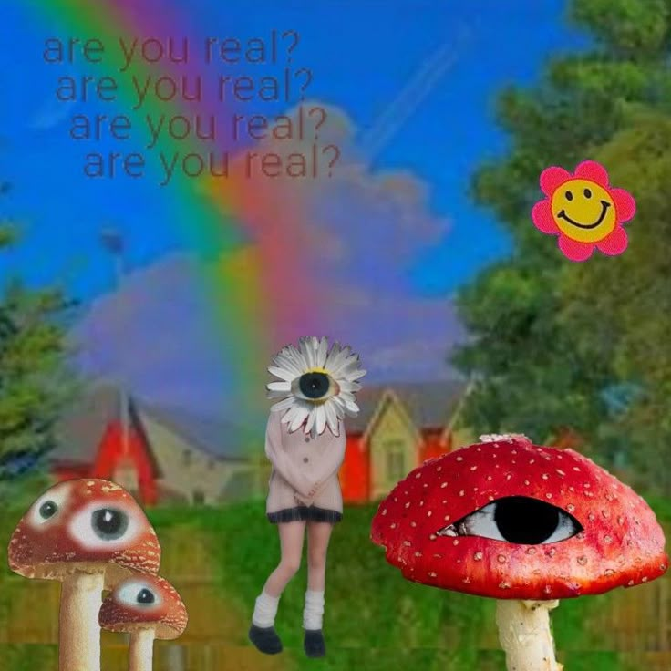
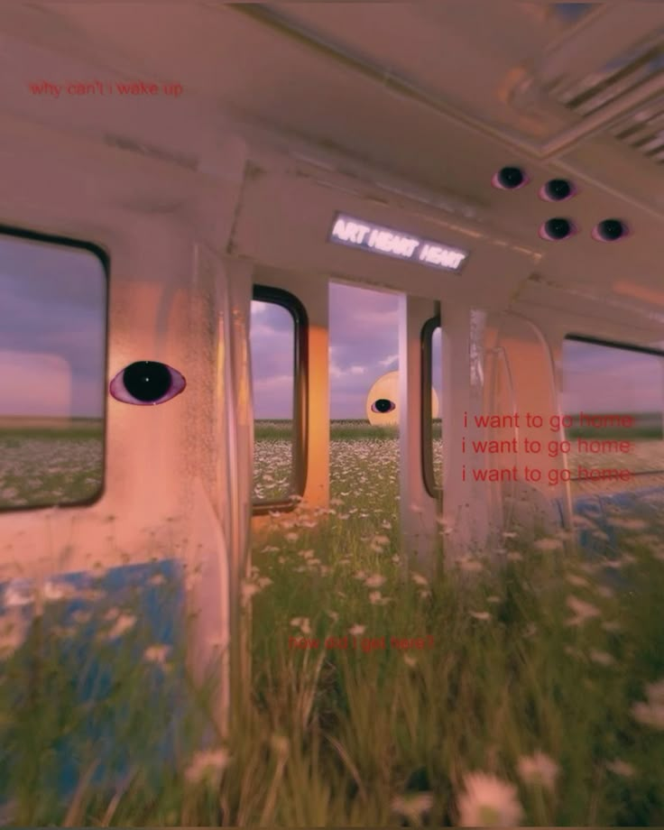

are you real? are you real? are you real?
Sometimes you look out the window and the grass looks too green. The sky looks too blue. Is it real?
are you real?
are you real?
i want to go home
Stuck between stations. The flowers outside whisper secrets. The eyes on the window reflect something else.
i want to go home
i want to go home
how did i get here?